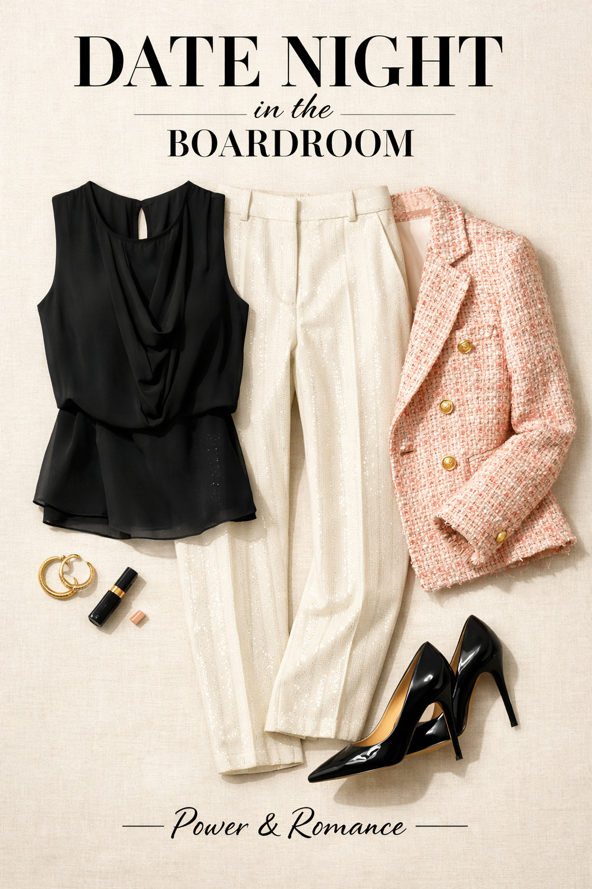
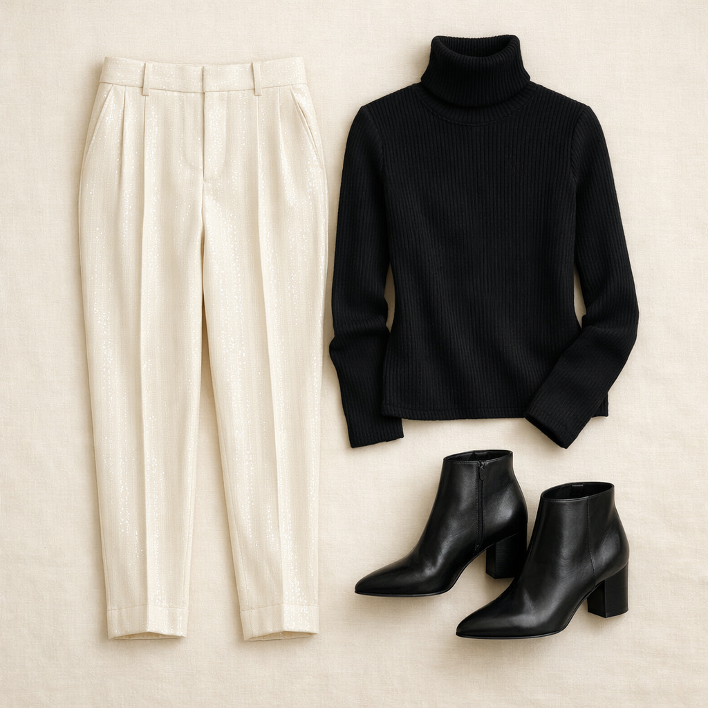
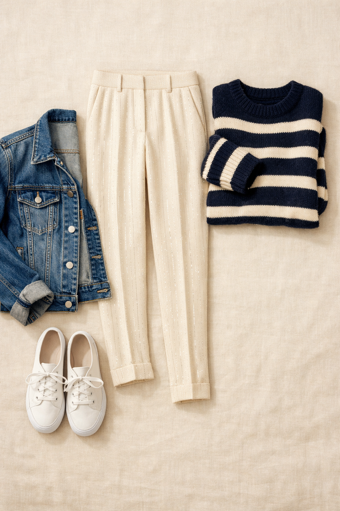

White House Black Market
Sequin Pinstripe Tapered Ankle Pant
$97.50
Subtle sequin shimmer woven into a classic pinstripe — refined, editorial, and unlike anything in the average wardrobe. The tapered ankle with tie detail gives them a modern finish. In Ecru, these are equal parts boardroom statement and weekend drama.
Shop NowWhy This Pick
A statement pant that can dress up or down depending entirely on what you pair with it. The sequin pinstripe catches light without being loud — it's shimmer with restraint. Three completely different energy levels from the same pair of pants.
3 Ways to Wear It
Styled with pieces already in your closet

Look 1 — Date-Night Boardroom
Black sleeveless Daniel Rainn blouse (#51) + Pink/cream/coral tweed blazer (#215) + Black stiletto pumps (#518). The ecru sequin pant between black silk and pink tweed is a stunning editorial trio. Wear this to any meeting you need to win.

Look 2 — Minimal Luxe
Black turtleneck (#74) — no jacket, let the pant be the star + Black ankle booties (#501). The most editorial look in the capsule: black turtleneck, sequin ecru pants, black booties. Sleek black top lets the shimmer do all the talking.

Look 3 — Weekend Sparkle
Navy/cream stripe Banana Republic sweater (#62) + Denim trucker jacket (#211) + White Keds (#510). Dressing down a statement pant for Saturday brunch — the contrast between sequin and denim is intentionally playful. The stripe sweater adds a nautical energy that somehow works.